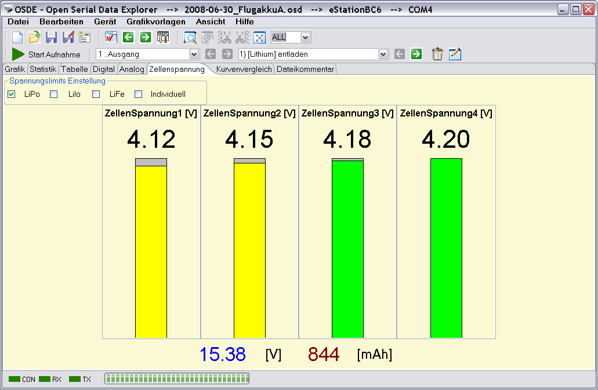
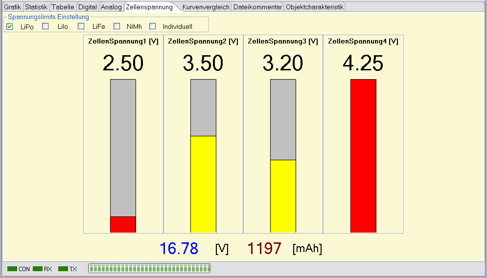
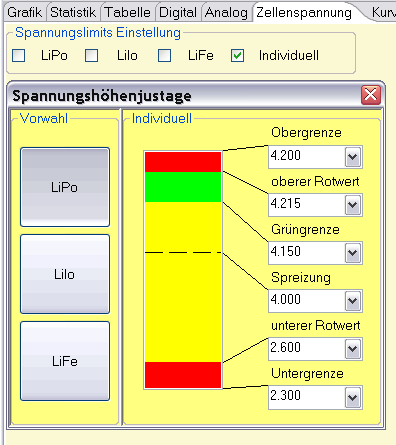

Die Zellen-Einzelspannungsanzeige ist für LiPo Akkuzellen ausgelegt und zeigt die Spannungen jeder Zelle numerisch und als Balkendiagramm dar.

Die Anzeige der Balken wird, wenn alle Zellenspannungen über 4,0 Volt liegen, gespreizt, über den Anteil, der über 4 Volt liegt, dargestellt. Hat eine Zelle eine Spannung kleiner gleich 2,6 Volt oder über 4,20 Volt wird der Balken in rot dargestellt. Bei Zellenspannungen zwischen 2,6 und 4,2 Volt zeigt sich der Balken in gelb. Beträgt eine Zellenspannung genau 4,2 Volt färbt sich der Balken grün.

Die Bilder sollen das Verhalten etwas verdeutlichen.
 Es ist möglich die Spannungshöhen der einzelnen Farbfelder an die gebrächlichsten Zellentypen anzupassen. Gibt ein ein Gerät Informationen über die verwendeten Zellen aus, folgt die Auswahl automatisch. Ist das nicht der Fall, muss hier leider die Auswahl von Hand erfolgen. Eine Kontrolle des Häkchens kann also nicht schaden. Wird ein Zellentyp verwendet, der keinem der selektierbaren Typen entspricht ist eine individuelle Einstellung möglich. Der Dialog, der durch Anwahl von "individuell" erscheint zeigt dann auch die Spannungshöhen aller vordefinierten Zellentypen und ermöglicht deren Veränderung.
Hinweis : Sollen mehr wie der letzte Messpunkt angezeigt werden bietet sich die Oszilloskopemode an.